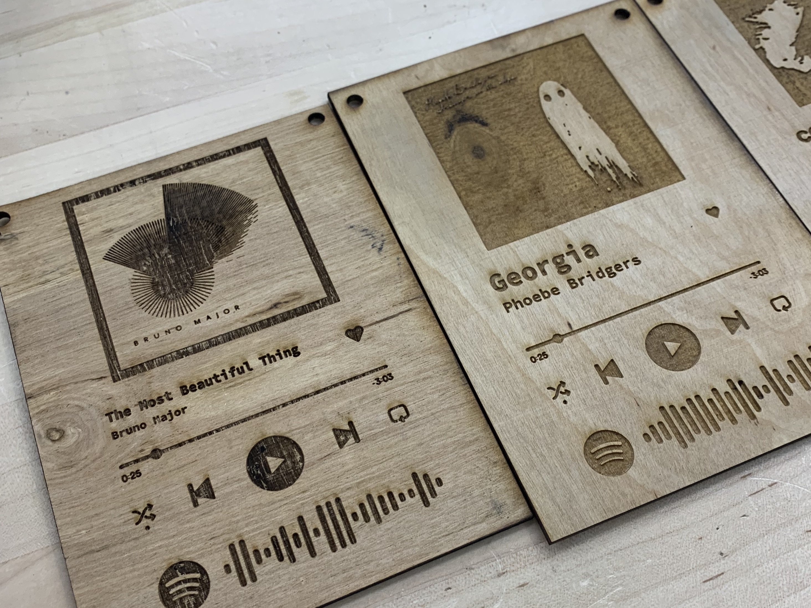
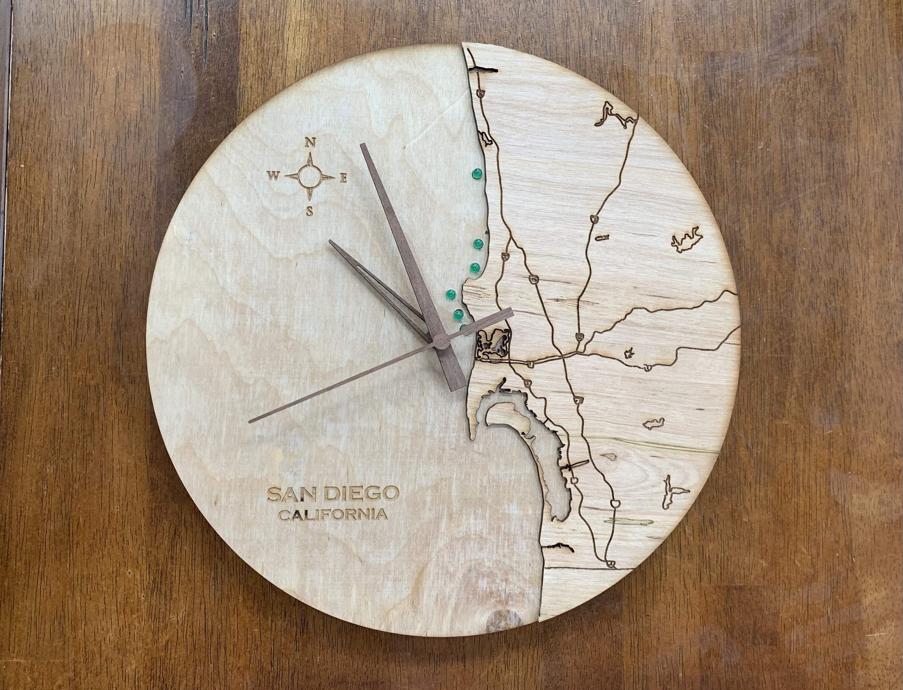
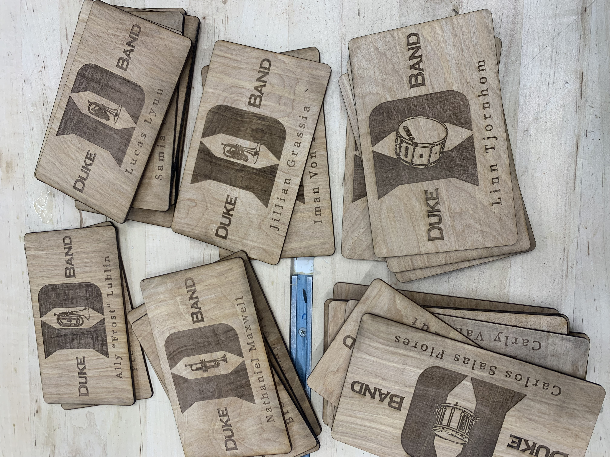
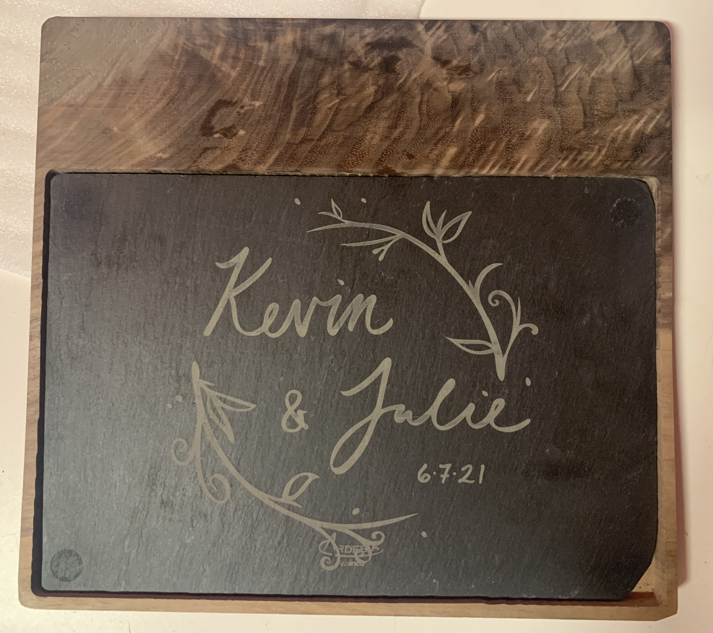
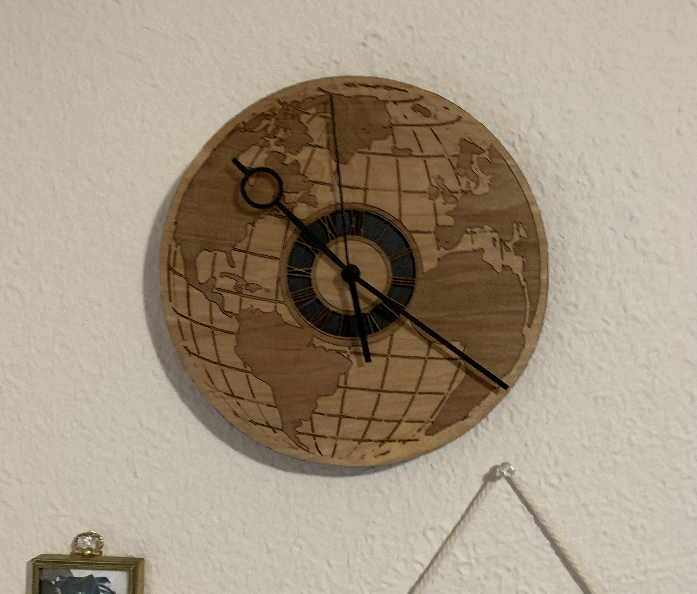

I am Grace
, an enthusiastic and creative problem-solver and people-person.
learn more
Creations

Spotify song art with scannable codes.

San Diego coastline clock with live surf height LED display (Raspberry Pi Pico W, Epilog 60W laser, Magic Seaweed API) .

Door decks for the Duke University Marching Band (Epilog 60W laser).
Hand-drawn pen, scanned, laser engraved (Epilog 60W laser).

Cheese board. CNC-cut walnut with engraved slate inlay.

World clock, laser engraved and mounted on wood (Epilog 60W laser, woodworking).